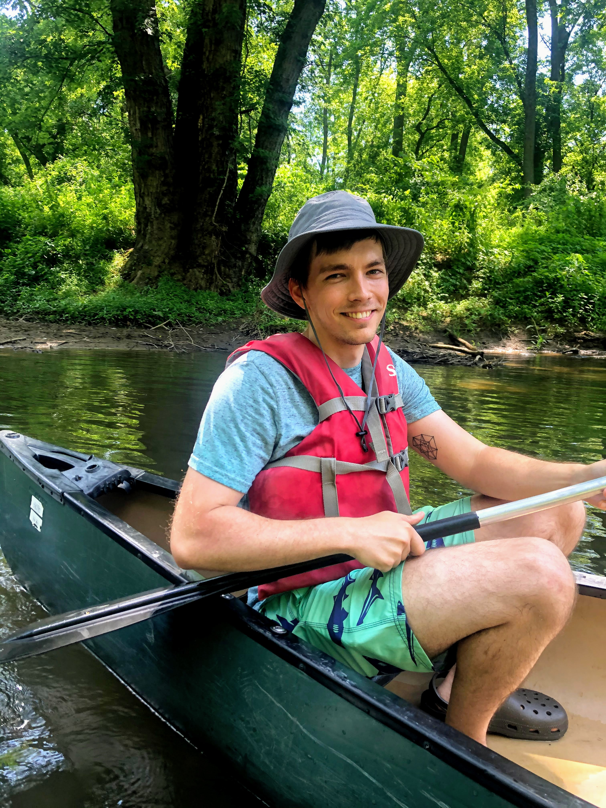

Welcome! This site will serve as my blog, CV, and portfolio site, in that order.
Blog posts will be mostly conversational rantings about technical topics in reinforcement learning (RL), other machine learning, and math.
I don't expect many readers, so many of the blog posts may be more notes for myself as I'm preparing my Ph.D. thesis.
I am currently a Ph.D. candidate at University of Delaware, advised by Dr. Keith Decker.
I also work quite a bit at Army Research Lab with Dr. Manuel Vindiola.
My research is mostly in deep multi-agent RL, but I am broadly interested in all things AI.
I also like playing guitar in my prog metal band, rock climbing, and video games.